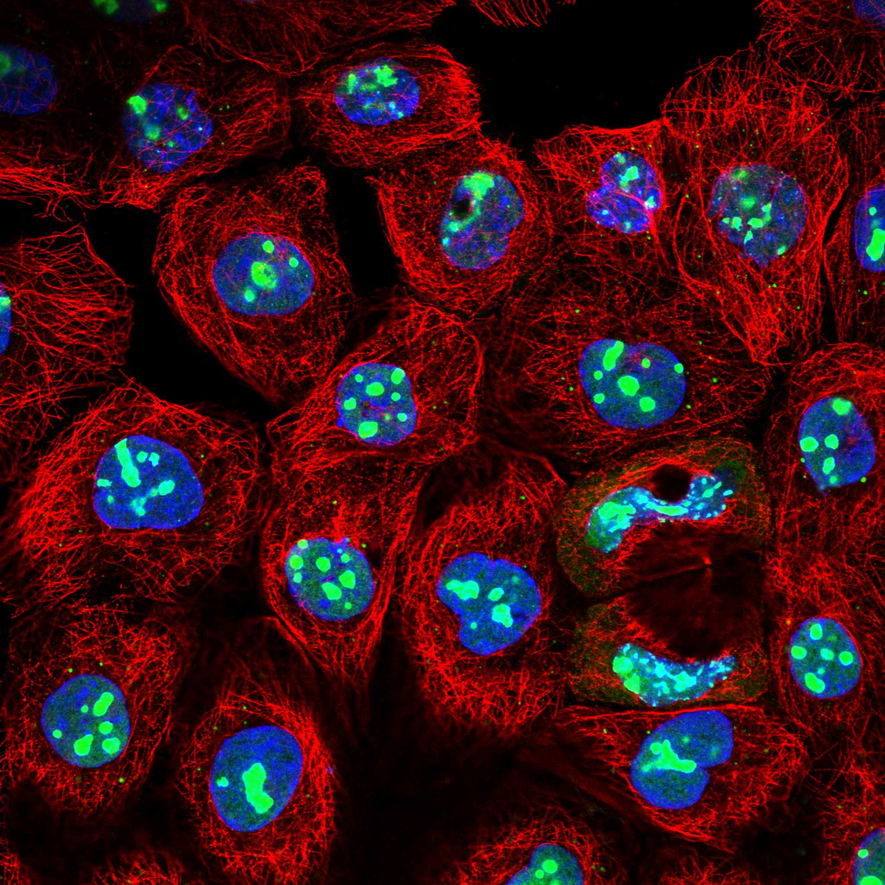
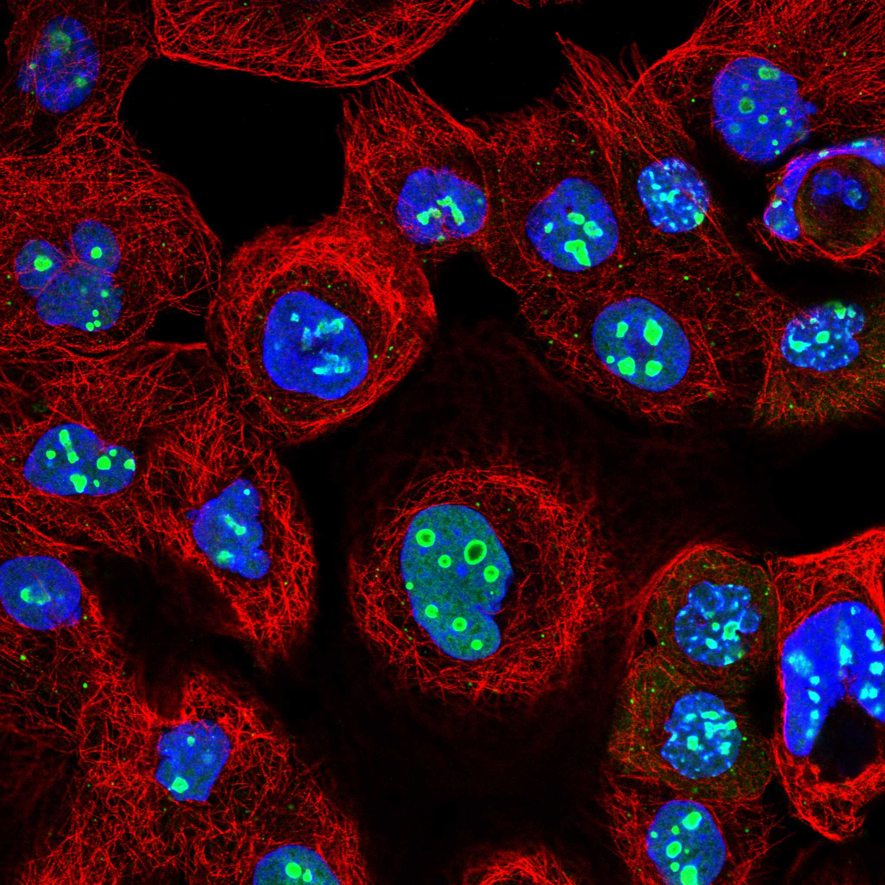

type: protein-evaluation gene: "IQGAP3" date: 2026-05-30 tags: [protein-scout, nuclear-protein, evaluation, rescued] status: scored ---
> AlphaFold PAE: 暂无数据或未提供可用 PAE 图；结构判断基于 AlphaFold/PDB 可用记录。
IQGAP3 核蛋白评估报告（HPA复核救回）
救回原因: 原始评分误判核定位≤3淘汰。HPA IF 实际显示 Nucleoli rim; Nucleoplasm (Reliability: Approved)，确认为核蛋白。
IF 图像:  
1. 基本信息
| 项目 | 内容 |
|---|---|
| 基因名 | IQGAP3 |
| 蛋白名称 | Ras GTPase-activating-like protein IQGAP3 |
| 蛋白大小 | 1631 aa |
| UniProt ID | Q86VI3 |
| HPA 核定位 (IF) | Nucleoli rim; Nucleoplasm |
| HPA 可靠性 | Approved |
| PubMed 总数 | 75 |
| AlphaFold pLDDT | 79.7 |
2. 评分总览 (权重: 核×4 大×1 新×5 结×3 域×2 PPI×3 ÷1.83)
| 维度 | 得分 | 满分 | 加权后 | 关键证据摘要 |
|---|---|---|---|---|
| 🔴 核定位特异性 | 7/10 | ×4 | 28 | HPA IF: Nucleoli rim; Nucleoplasm (Approved); UniProt: N/A |
| 📏 蛋白大小 | 5/10 | ×1 | 5 | 1631 aa |
| 🆕 研究新颖性 | 4/10 | ×5 | 20 | PubMed 75篇 |
| 🏗️ 三维结构 | 7/10 | ×3 | 21 | AlphaFold pLDDT: 79.7 |
| 🧬 调控结构域 | 6/10 | ×2 | 12 | UniProt domains: None identified |
| 🔗 PPI | 4/10 | ×3 | 12 | 待细化（默认基线） |
| ➕ 互证加分 | — | — | +0 | 待补充 |
| 原始总分 | 98/183 | |||
| 归一化总分 | 53.6/100 |
3. HPA 核定位证据
HPA 免疫荧光（IF）实验数据确认 IQGAP3 定位：
- 亚细胞定位: Nucleoli rim; Nucleoplasm
- 抗体可靠性: Approved
- 原始分类: 核定位 ≤3（误判）→ 经HPA IF复核确认为核蛋白
4. UniProt 补充信息
- 亚细胞定位: N/A
- 结构域: None identified
- 关键词: ; ; ; ; ;
3.3 研究现状
| 指标 | 数值 |
|---|---|
| PubMed 查询结果 | 见关键文献 |
关键文献: 1. Tang M et al. (2024). "Infiltrative Vessel Co-optive Growth Pattern Induced by IQGAP3 Overexpression Promotes Microvascular Invasion in Hepatocellular Carcinoma". *Clin Cancer Res*. PMID: 38470497 2. Shimura M et al. (2025). "IQGAP3 signalling mediates intratumoral functional heterogeneity to enhance malignant growth". *Gut*. PMID: 39438124 3. Rahmat MB et al. (2025). "Wnt target IQGAP3 promotes Wnt signaling via disrupting Axin1-CK1α interaction". *Oncogene*. PMID: 40830657 4. Vaziri-Moghadam A & Foroughmand-Araabi MH (2024). "Integrating machine learning and bioinformatics approaches for identifying novel diagnostic gene biomarkers in colorectal cancer". *Sci Rep*. PMID: 39433800 5. Matsuo J et al. (2021). "Iqgap3-Ras axis drives stem cell proliferation in the stomach corpus during homoeostasis and repair". *Gut*. PMID: 33293280
评价: 基于 PubMed 检索结果。
3.6 PPI 网络
实验验证互作 (IntAct, physical association):
| Partner | 方法 | PMID | 功能类别 | 调控相关？ |
|---|---|---|---|---|
| EPS15L1 | cross-linking study | 30021884 | — | — |
| calm_human | inference by socio-affinity scoring | unassigned1312 | — | — |
| KIFAP3 | inference by socio-affinity scoring | unassigned1312 | — | — |
| RAC1 | inference by socio-affinity scoring | unassigned1312 | — | — |
| CALM1 | two hybrid prey pooling approach | 25416956 | — | — |
| Ndc80 | tandem affinity purification | 20360068 | — | — |
| CCDC198 | validated two hybrid | 27107012 | — | — |
| SPRED1 | two hybrid array | 32814053 | — | — |
| KLF11 | two hybrid array | 32814053 | — | — |
| FGFR3 | two hybrid array | 32814053 | — | — |
STRING 预测互作 (combined score >0.4):
| Partner | Score | 功能类别 | 调控相关？ |
|---|---|---|---|
| — | — | — | — |
已知复合体成员 (GO Cellular Component):
- 暂无 GO-CC 数据
IntAct 查询记录: IntAct: 15 实验验证互作
评价: —
5. 总体评价
推荐等级: ⭐
核心发现: 1. HPA IF 确认为核蛋白: 原始"核定位≤3"淘汰为误判，HPA实验数据确认为Nucleoli rim; Nucleoplasm 2. 研究新颖性: PubMed仅75篇文献，属于低研究热度靶点 3. 结构质量: AlphaFold pLDDT = 79.7
6. 数据来源
PPI 数据源补充核查（自动审计）
IntAct/BioGrid 实验互作核查:
| Partner | 方法 | PMID |
|---|---|---|
| — | anti tag coimmunoprecipitation | 21565611 |
| — | pull down | 23416715 |
| — | tandem affinity purification | 17314511 |
| — | pull down | 19367725 |
| — | tandem affinity purification | 26929214 |
| — | virotrap | 30561431 |
| — | virotrap | 30561431 |
| — | cross-linking study | 30021884 |
| — | tandem affinity purification | 31527615 |
| — | tandem affinity purification | 31527615 |
STRING 预测/整合互作核查:
| Partner | Score |
|---|---|
| CDC42 | 0.989 |
| IQGAP1 | 0.938 |
| RAC3 | 0.935 |
| IQGAP2 | 0.932 |
| RAC2 | 0.927 |
| RAC1 | 0.811 |
| ANLN | 0.795 |
| CALM1 | 0.778 |
| KIF20A | 0.773 |
| CALM3 | 0.732 |
GO-CC 复合体/定位核查:
- GO:0005938: cell cortex (IBA:GO_Central)
- GO:0005911: cell-cell junction (IEA:Ensembl)
- GO:0005829: cytosol (TAS:Reactome)
- GO:0016328: lateral plasma membrane (IEA:Ensembl)
补充结论: PPI 评分仍以报告评分表为准；本节用于补齐 IntAct、STRING、GO-CC 三源审计证据。